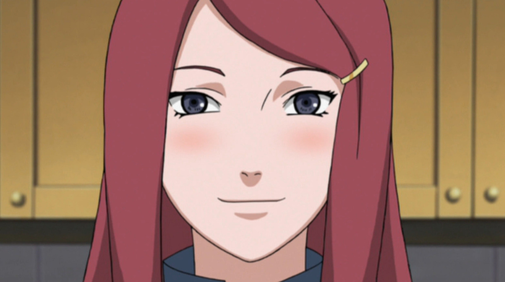
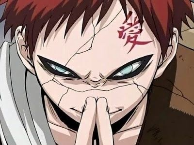
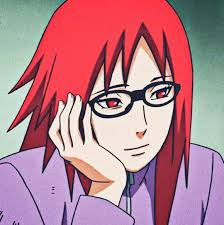
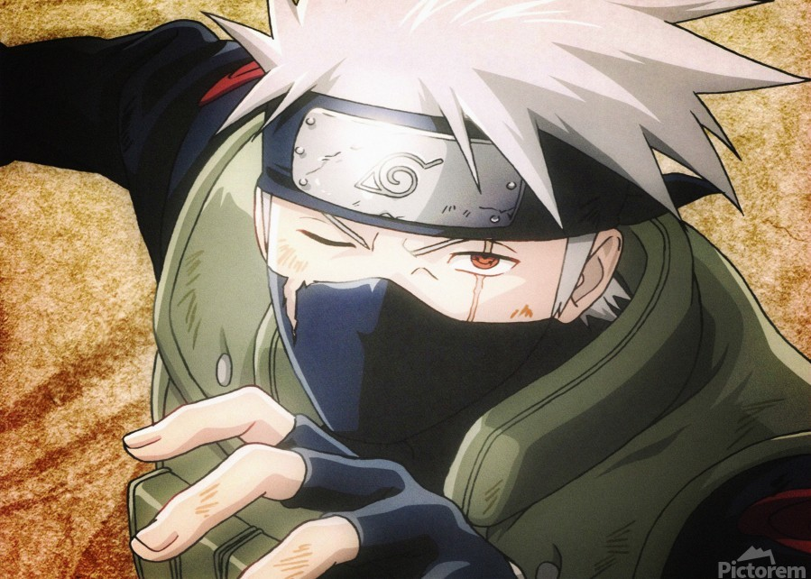

Naruto
Naruto
| Naruto | Akatsuki | Kunoichis |
| Akatsuki: | Pain/Nagato | Itachi | Hidan | Zetsu | Sasori | Deidara | Kisame | Kakuzu | Konan |
|---|
| Kushina | Gaara | Karin | Kakashi |
|---|---|---|---|
|  |  |  |  |
| Kushina) era la madre de Naruto Uzumaki y la esposa del Cuarto Hokage Minato Namikaze. Era una kuoichi perteneciente al Clan Uzumaki de Uzushiogakure y fue la segunda Jinchuriki de Kurama. Kushina fue una niña de la antigua tierra del Remolino. |
Gaara esQuinto Kazekage fue el Comandante General del ejército de la Gran Alianza Shinobi y Comandante de la Cuarta Division. Es el hijo menor del Cuarto Kazekage, Rasa yKakura, hermano menor de Temari y Kankuro. Fue el tercer Jinchuriki de Shukaku. Gaara se ganó el apodo de Gaara del Desierto. | Karin (香燐, Karin) es una subordinada de Orochimaru y una ex-kunoichi de Kusagamure, perteneciente al Clan Uzumaki, viajó con Sasuke Uchiha ayudándolo en su venganza. Asistió a Orochimaru en sus experimentos y fue dejada a cargo de la Guarida del sur mientras él no estaba. | Kakashi Hatake (はたけカカシ, Hatake Kakashi) es un shinobi de Konohagurame. Fue un Jounin, ex-Anbu y el líder del Equipo 7. Fue conocido mundialmente por su uso del Sharingan, lo que le valió el apodo de Kakashi el Ninja que Copia |